■ ストーリーの流れ
疲れの取れない朝 → 鏡で肌荒れ → 便秘・ぽっこりお腹 → 通勤も憂うつ → 眠りも浅い（悩み）
→ 「その不調、実は小腸から」→ 腸活Labo Kouryuで吉田さまに相談・お腹の腸活施術（解決）
→ 体が軽い・好きな服・好きな食事・ぐっすり → 「本来の自分を取り戻す」→ ご案内
■ 参考トーン（内部制作の骨格参照）
- 感情ストーリーの間の取り方（悩み→救い）
- 施術カットの落ち着いた質感・浅い被写界深度
- 腸活/ファスティングの前向きな訴求角度
※業態に合わない他社CMはお見せせず、内部の構成づくりの参照にとどめています。
前半：お悩み（寒色・くもり）
S1 / 0–5秒動画化: Kling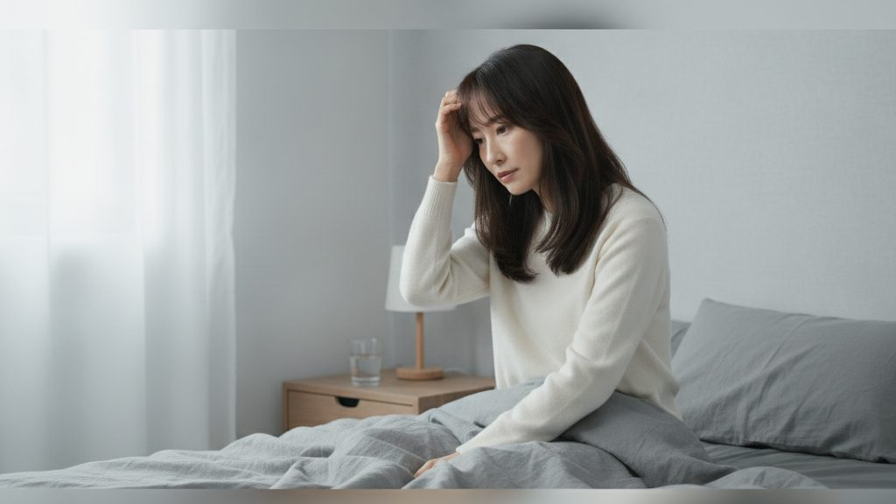
S1：朝、起き上がるも身体が重い
その不調、"腸"かもしれません
HOOK｜朝、身体が重い
「朝、起きても……なんだか身体が重い。」
動き：ゆっくり寄り／カーテンが微風で揺れる
S2 / 5–11秒動画化: Kling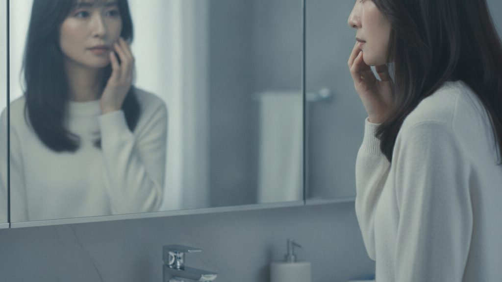
S2：鏡で肌の不調を気にする
肌荒れ・大人ニキビ
お悩み①｜肌
「肌は荒れて、大人になってもニキビ。」
動き：鏡へゆっくりズーム／頬にそっと触れる
S3 / 11–17秒動画化: Kling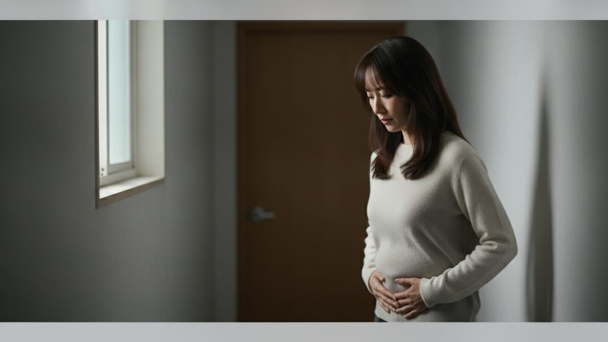
S3：お腹に手を当て浮かない表情
便秘・ぽっこりお腹
お悩み②｜便秘・ぽっこりお腹
「便秘に、ぽっこりお腹。朝はなかなかスッキリできない。」
動き：わずかに寄り／お腹にそっと手（上品に暗示）
S4 / 17–23秒動画化: Veo/Seedance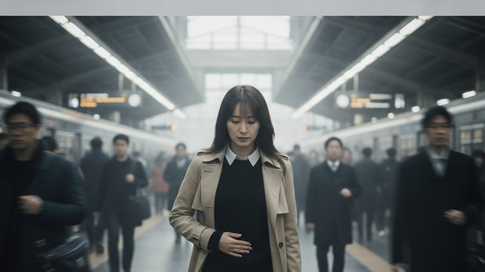
S4：通勤・外出が憂うつ
お腹が張って、外出も憂うつ
お悩み③｜外出が憂うつ
「お腹が張ると、外に出るのも少し憂うつ。」
動き：ゆっくり追い／背景の人がぼけて流れる
S5 / 23–28秒動画化: KlingS5：日中ぼんやり・眠気
眠りが浅い／疲れが抜けない
お悩み④｜睡眠
「眠りも浅くて、疲れがずっと抜けない。」
動き：ゆっくり寄り／ゆるい瞬き
転換 → 解決（暖色・あたたかい光）
S6 / 28–34秒動画化: Veo/Seedance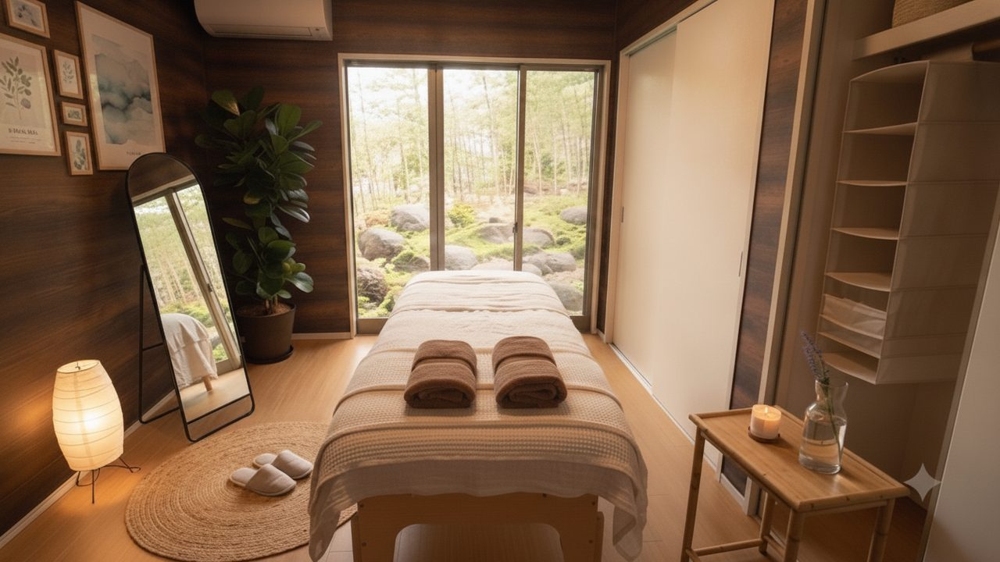
S6：和モダンの落ち着いた個室
不調の入口は、"小腸"
気づき｜小腸から
「その不調、実は"小腸"からかもしれません。」
動き：室内をゆっくりパン／光がやわらかく明滅
S7 / 34–40秒動画化: Kling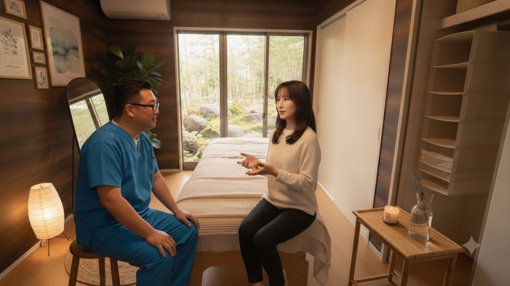
S7：吉田さまがカウンセリング
腸活のプロがカウンセリング
相談｜プロが向き合う
「腸活のプロが、あなたの不調にじっくり向き合う。」
動き：二人にゆっくり寄り／自然なうなずき
S8 / 40–46秒動画化: Kling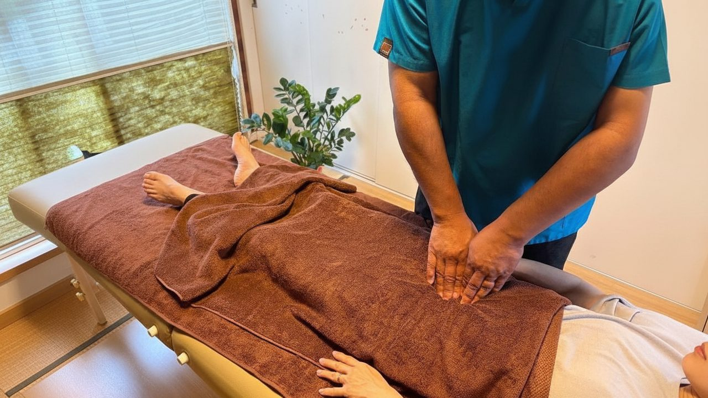
S8：お腹への腸活施術（受領写真準拠）
小腸から整える／食事制限・過度な運動に頼らない
★施術｜腸活（お腹）
「小腸に着目した専門ケアで、内側から整える。食事制限も、きつい運動もいりません。」
動き：お腹に重ねた手へ寄り／ゆっくり1度やさしく／いただいた施術写真の質感・配置を保持
後半：アフター（明るい光）
S9 / 46–51秒動画化: Kling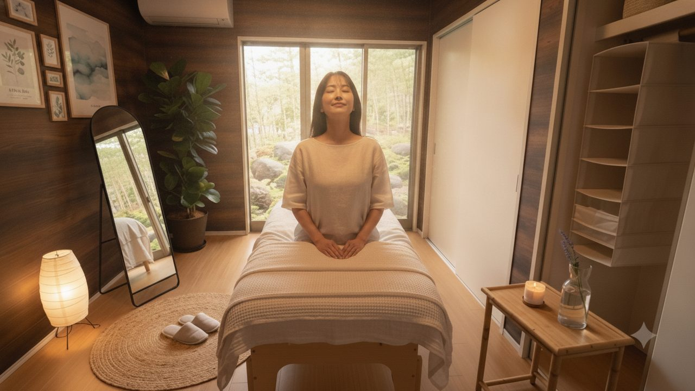
S9：施術後、スッキリ・深呼吸
体が、軽い。
実感｜体が軽い
「たった一度でも、体がふっと軽くなる。」
動き：ゆっくり寄り／深呼吸で肩の力が抜ける
S10 / 51–57秒動画化: Kling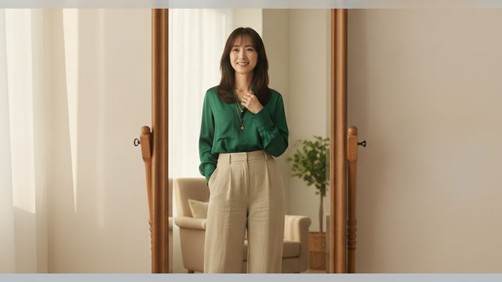
S10：好きな服で鏡ににっこり（アフター生活）
好きな服。好きな食事。ぐっすりの朝。
変化｜生活が前向きに
「好きな服が着られる。好きなものを食べられる。朝はぐっすり。」
動き：ゆっくり寄り／自然な笑顔が広がる（本番は生活2〜3カットに展開可）
S11 / 57–62秒動画化: Kling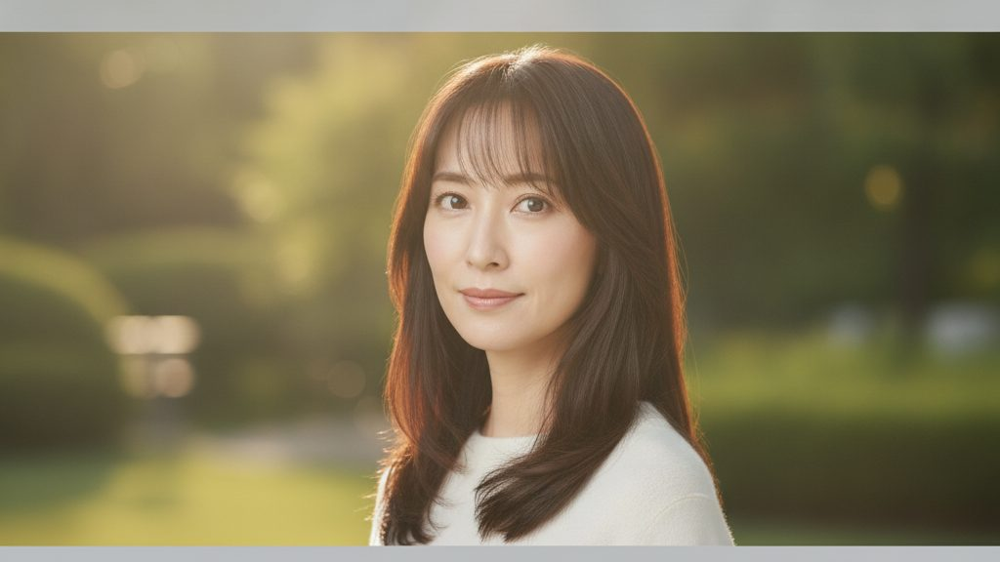
S11：本来の自分を取り戻す・笑顔
"本来の自分"を取り戻す
締めコピー｜本来の自分
「小腸から、"本来の自分"を取り戻す。」
動き：ゆっくり寄り／笑顔が深まる
エンドカード（ご案内）
S12 / 62–68秒後処理: ffmpeg合成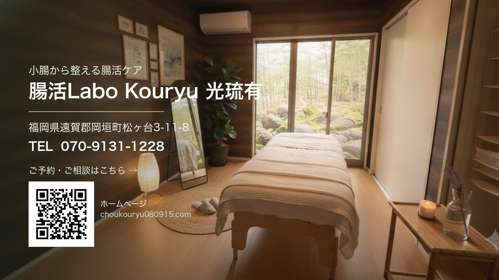
S12：和モダン個室背景＋ロゴ/QR/連絡先
腸活Labo Kouryu 光琉有｜小腸から整える腸活ケア
CTA｜ご案内
「小腸から整える腸活ケア、腸活Labo Kouryu 光琉有。まずはお気軽にご相談ください。」
焼き込み：ロゴ／店名／タグライン／住所（岡垣町松ヶ台3-11-8）／TEL 070-9131-1228／HP QR（choukouryu080915.com）
■ エンドカードの掲載内容
腸活Labo Kouryu 光琉有
小腸から整える腸活ケア
福岡県遠賀郡岡垣町松ヶ台3-11-8｜TEL 070-9131-1228
ホームページQR → https://choukouryu080915.com/（WEB予約・LINE相談・電話相談へ）
■ 今回モックで仮置きした点（ご確認ください）
- 尺：約60秒（もっと短く 30〜45秒も可）
- ナレーション：あり（物語を優しく語る形）※なし・音楽のみも可
- BGM：前半しっとり → 後半あたたかい癒し系
- テロップ：静止・フェードイン中心
- 登場する女性：特定の方を再現しないAIオリジナルの40代女性
- 店内：いただける「理想のお部屋イメージ画像」があれば差し替えます